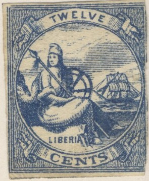
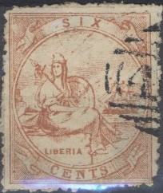
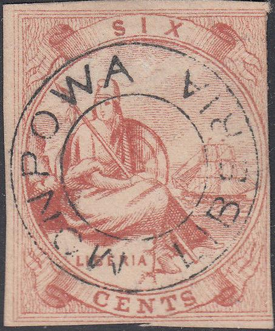
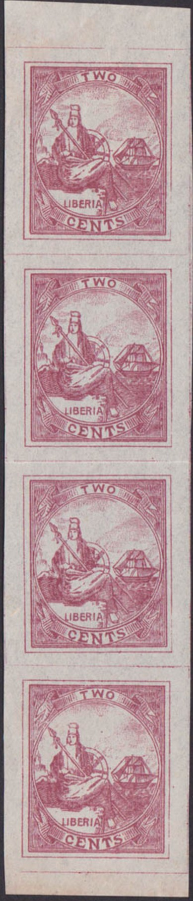

{kind=link}


Forgeries made by the same forger. Note the very badly done "C" of "CENT" in the 1 c value. The "A" of "LIBERIA" almost disappears in the background shading.
Return To Catalogue - Liberia 1860-1880 - Liberia 1860-1880, forgeries, part 1
Note: on my website many of the
pictures can not be seen! They are of course present in the
catalogue;
contact me if you want to purchase it.
If my information is correct, more than 50 different kinds of forgeries exist of these stamps. The genuine stamps have different background patterns for the different values. Many forgers have used the same background pattern for all values (except Fournier).

Forgeries made by the same forger. Note the very badly done
"C" of "CENT" in the 1 c value. The
"A" of "LIBERIA" almost disappears in the
background shading.

6 and 24 c forgeries made by the same forger. These forgeries are
printed on hard paper (reduced sizes).
I've seen other forgeries printed on hard paper, apparently made by the same forger, of the countries St. Helena, Bahamas, India, Egypt, Hong Kong and Ceylon.
Another, more primitive forgery:

I think the above forgery is the one described in 'The Spud Papers II'. The background consists of diagonal straight lines (it should be wavy perpendicular lines). The shoulder and arm seems very large. Though in 'The Spud Papers', there is a flag on the ship, in this particular forgery there isn't any. Between the shading of the mantle on the stone and the word 'LIBERIA' there is very little space (in the genuine stamps there is quite some space). This forgery also exists in 6 p and 24 c.
And another forgery of the 24 c value:



Rather primitive forgery of the 24 c green value.

A very badly done 6 c red forgery, this particular forgery has
"FALSCH" (=forged in German) overprinted.


In this forgery type, the "C" of "CENTS" touches the bottom of the label. I've been told that this forgery might have been made by Sartori or Behrmann (I'm not sure if this information is correct...).



Two forgeries possibly made by the same forger, both with
"MOPOWA LIBERIA" cancel.


Very blur forgery type


Strip of four 2 c forgeries, with the "N" in
"CENTS" too big.
Stamps - Timbres-Poste - Briefmarken
{kind=link}
{kind=link}